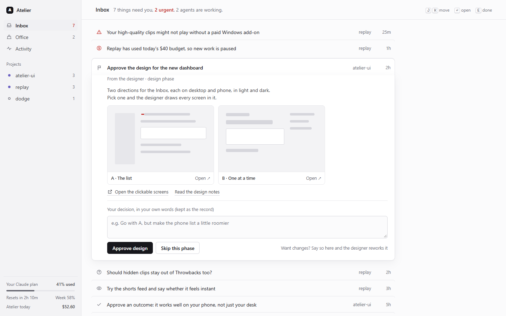
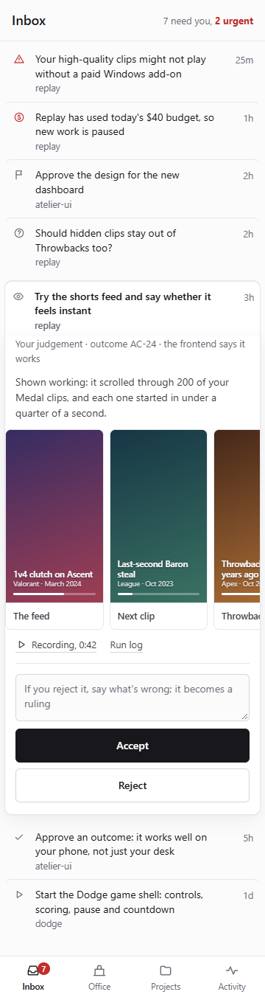
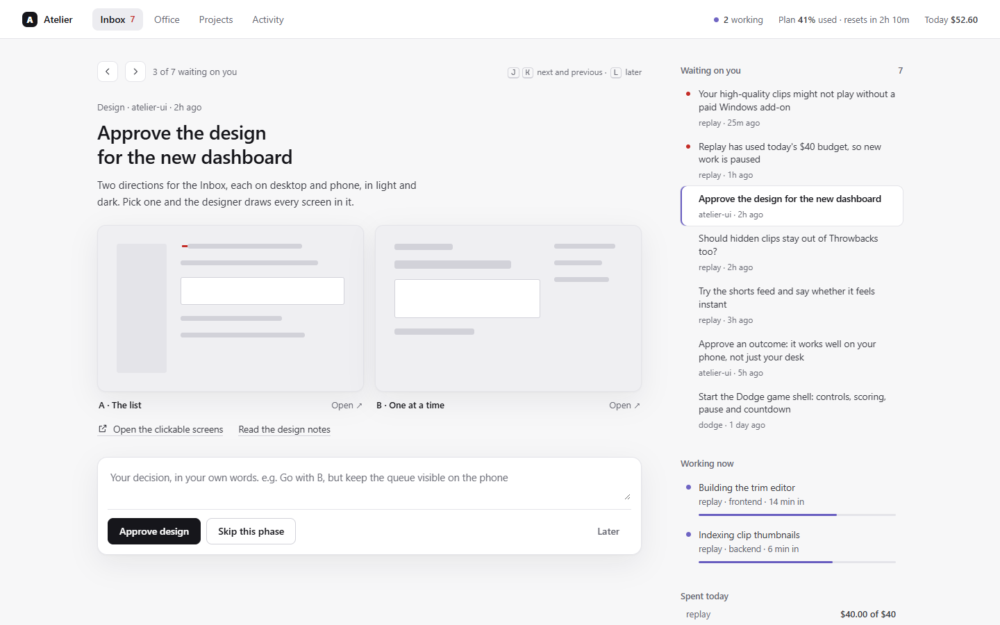
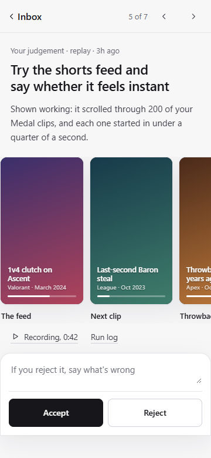

Two looks for the Inbox
Same content, same decisions, different layout. Open each one to click through it; narrow the window to see the phone layout, and use the switcher in the corner for dark mode and the empty state.
A · The list
Everything that needs you in one list; an item opens in place with its buttons.


B · One at a time
One decision fills the page with the work shown large; the rest of the queue waits beside it.

